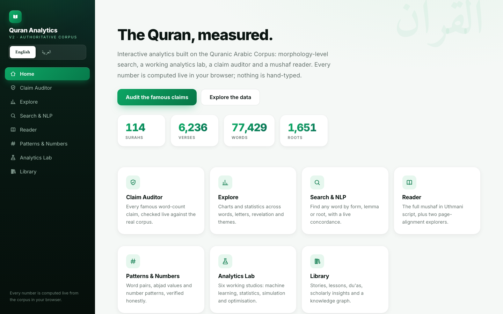

Interactive analytics over the full Quranic Arabic Corpus: morphology-level search, a machine learning lab, statistical tests and a claim auditor. In English and Arabic, in your browser.

Every number on this site is computed live from the corpus in your browser and pinned by tests. Nothing is hand-typed, nothing is hidden.
Six working studios: logistic regression that tells Meccan from Medinan surahs, k-means and PCA clustering, hypothesis testing, Monte Carlo simulation, a linear-programming memorisation optimiser and a live BI dashboard with filters.
Search by surface form, lemma or root, with a full on-screen Arabic keyboard and a highlighted concordance.
One tap flips the entire app into Arabic: right-to-left layout, mirrored charts, Arabic-Indic numerals.
439 nodes and 929 edges link surahs, prophets, events and tafsir into one interactive map with 28 communities.
The full mushaf, verse by verse, in Uthmani script with the Amiri typeface.
Every famous word-count claim, checked against the real corpus. We show the claimed figure, the verified count by lemma, and what a naive search returns. Nothing hidden.